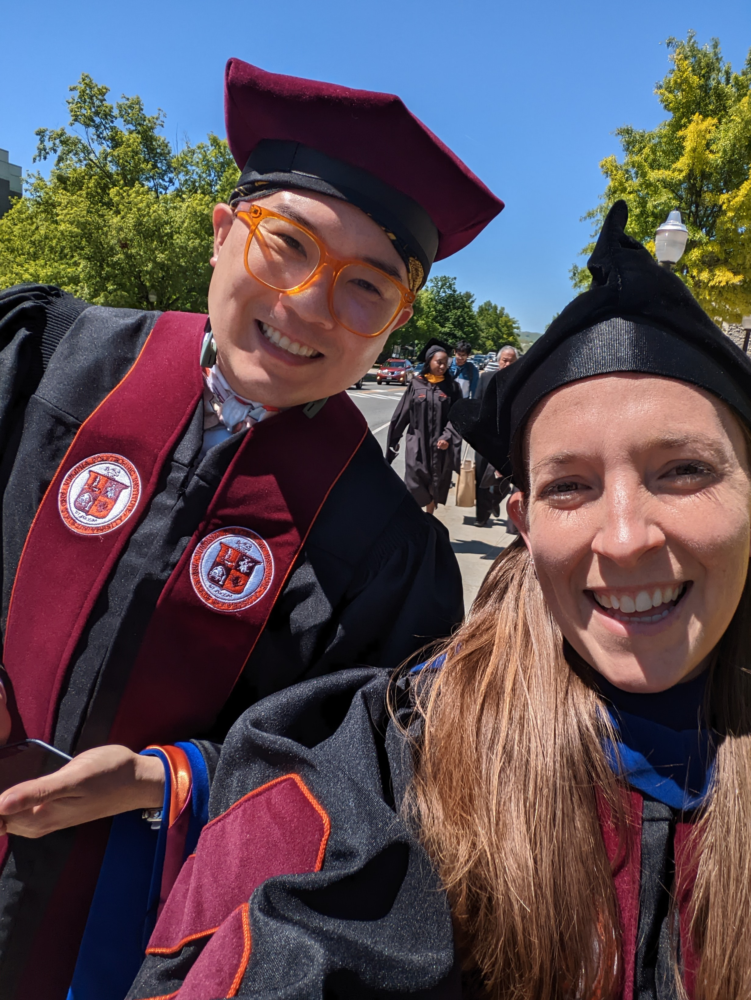
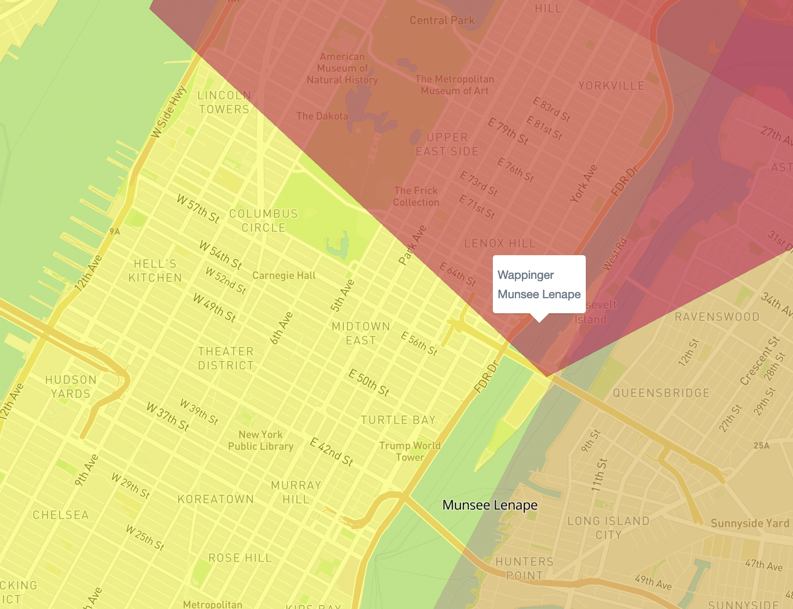
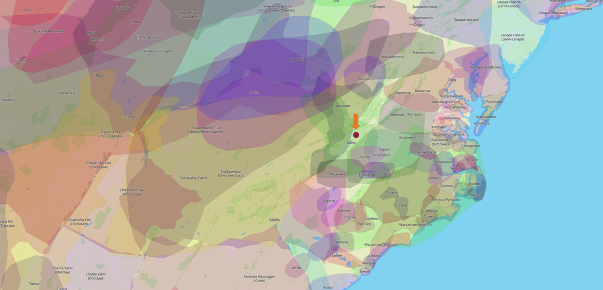
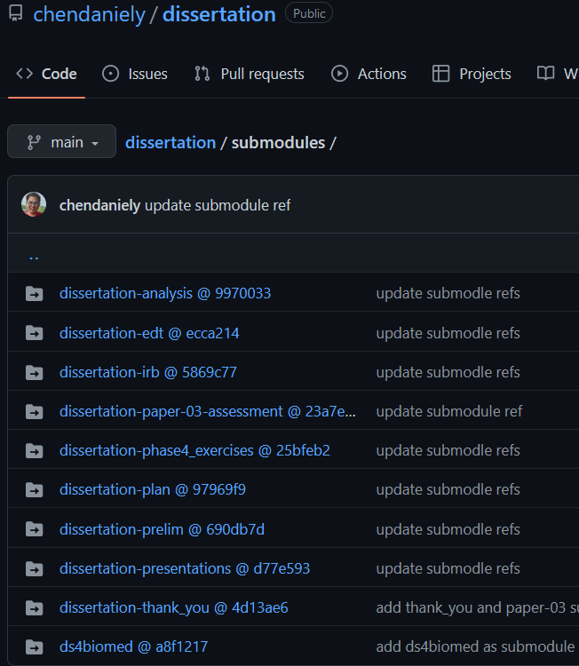

Combining Analysis Work with Reports and Presentations
What I Would Change About My Dissertation
Thursday, June 9, 2022
Munsee Lenape
- https://native-land.ca/
Tutelo
- https://native-land.ca/
Thank You
I’m developing a presentation for @seruff_ using @quarto_pub presentations.
— Beatriz Milz (@BeaMilz) April 16, 2022
I started to implement a similar theme as the xaringan @RLadiesGlobal theme made by @apreshill !
If anyone wants to help to improve it, It would be awesome 💜 #rladies #RStats https://t.co/xps1v49Ku4 pic.twitter.com/sK9d3X3unE
I Finally Graduated…
Start Times:
- RStatsNYC: 2015
- Grad School: 2015
Daniel Chen, PhD, MPH
Postdoctoral Research and Teaching Fellow, University of British Columbia
Data Science Educator, RStudio, PBC (RStudio Academy)
Data Scientist, Lander Analytics
Author, Pandas for Everyone
Alumni
- The Carpentries
Combining Analysis Work with Reports and Presentations
I talk about this a lot…
- Building Reproducible and Replicable Projects
- Structuring Your Data Science Projects
- Doing Data Science
… and teach it.
Constrants + Incremental Improvements
- Working with real-world constraints
- Incremental improvement
- Time-box your learning
Back in 2019…
Building Reproducible and Replicable Projects
reproducibility - the extent to which consistent results are obtained when an experiment is repeated
replicability - the ability of a scientific experiment or trial to be repeated to obtain a consistent result
Important for scale
- Build more features
- Move to larger/cloud compute
- Collaborate with other people
Analysis Project Structure
Folder Setup

Folder Setup

Dissertation Analysis
Repo: https://github.com/chendaniely/dissertation-analysis
Project/Packaging
├── LICENSE
├── R
│ ├── get_survey.R
│ ├── gg_plot_dendro.R
│ ├── likert.R
│ ├── offset_number.R
│ ├── plot_question_bar.R
│ ├── question_str_to_int.R
│ ├── recode_occupation.R
│ ├── remove_duplicate_ids.R
│ ├── remove_identifiers.R
│ ├── remove_invalid_rows.R
│ ├── save_analysis_edt.R
│ ├── strip_html.R
│ └── survey_q_multi_choice_multi_answer.R
├── README.md
├── dissertation-analysis.Rproj
├── renv
│ ├── activate.R
│ └── settings.dcf
└── renv.lockAnalysis
├── analysis
│ ├── 010-qualtrics
│ ├── 020-validation
│ ├── 030-persona
│ ├── 040-workshop
│ ├── 050-exercises
│ └── emails
├── build
│ ├── 00-clean.R
│ ├── 01-download_process_qualtrics.R
│ └── 10-persona.R
├── data
│ └── original
├── output
│ ├── exercises
│ ├── persona
│ ├── survey
│ └── validationNaming Things
The Golden Rule of Naming Files and Other Things:
— Jenny Bryan (@JennyBryan) December 11, 2016
Thou shalt get only as creative with names as thy own skill with regular expressions.
- Machine readable
- Deliberate user of
_and-
- Deliberate user of
- Human readable
- contains info on content
- Plays well with default ordering
- ISO 8601
- Left pad with
0
> fs::dir_tree("analysis/020-validation/")
analysis/020-validation/
├── 010-prep_survey_questions.R
├── 020-005-fa.Rmd
├── 020-010-cronbah.Rmd
└── 030-cart.RmdProject File
- https://rstats.wtf/project-oriented-workflow.html
Working Directories
- https://rstats.wtf/safe-paths.html

Only commiting the “final” artifacts
- So the reports and presentations can always refer to things I need
- This is the stuff that goes into your
outputorresultsfolder- Other projects / repositories have a consistent place to look for latest artifacts (e.g., images, tables, etc)
data/final: for final datasets
> fs::dir_tree("output/", recurse=1)
output/
├── exercises
│ ├── score_prop-ex-treatment-facet_pre-combine_treatments.png
│ ├── score_prop-ex-treatment-facet_pre.png
│ ├── score_prop-ex-treatment-no_facet-combine_treatments.png
│ ├── score_prop-ex-treatment-no_facet.png
│ ├── score_prop-ex-treatment-pre100.png
│ ├── score_prop-ex-treatment.png
│ └── time_to_complete-ex-treatment-no_facet-combine_treatments.png
├── persona
│ ├── efa_eigen_scree.png
│ ├── efa_eigen_scree_good.png
│ ├── efa_item_correlations.png
│ ├── likert_only
│ ├── survey_likert
│ └── survey_only
├── survey
│ ├── 01-self_assessment
│ ├── 02-pre_workshop
│ ├── 03-post_workshop
│ └── 050-logitudinal
└── validation
└── 020-010-cronbah-survey_likert.htmlAnalysis Code Development
Testing…
- Controversial: I didn’t write unit tests for my actual functions
- this wasn’t that practical
- Instead, I wrote code to verify my data
stopifnot,{testthat},{checkmate}
- Research Software Engineers
- This is an analysis project, not software
Pinning your package versions
renvrenv::init()to create therenv.lockfilerenv::snapshot(): to update the lockfilerenv::restore(): to restore the packages
├── renv
│ ├── activate.R
│ └── settings.dcf
└── renv.lock "tidyverse": {
"Package": "tidyverse",
"Version": "1.3.1",
"Source": "Repository",
"Repository": "CRAN",
"Hash": "fc4c72b6ae9bb283416bd59a3303bbab"
},What I would Improve
- Actually use the
Rpackage structure - I know I was asking to get my computer set on fire!
- But the structure was there
DESCRIPTION to fake a package
Type: Project
Package: dissertation-analysis
Title: Dissertation Analysis
Version: 0.0.0.9000
Authors@R:
person("Daniel", "Chen",
"chendaniely@gmail.com",
role = c("aut", "cre"))
Description: Dissertation Analysis
Imports:
tidyverse,
qualtRics
Suggests:
testthat (>= 3.0.0)
Config/testthat/edition: 3
Encoding: UTF-8
LazyData: trueLoad Your Functions
Rig to manage Multiple R versions
- Already built-in to windows
- RSwitch isn’t maintained
- Linux now has something
My Build Enviornemnt
What I did:
- Write an R script that runs all my parameterized reports with different
params - All I had were R scripts
- Not the worst thing in the world, I didn’t mind re-running the entire pipeline
Improving the Build Enviornment
What I would change + look into
{targets}: https://docs.ropensci.org/targets/
- Could also have used
Makebut I needed to do parameter sweeps of files.
Other project repositories
Don’t keep everything in a mono repo
- ds4biomed book: https://github.com/chendaniely/ds4biomed/
- IRB: https://github.com/chendaniely/dissertation-irb/
- Initial Plan: https://github.com/chendaniely/dissertation-plan
- Presentations: https://github.com/chendaniely/dissertation-presentations
- Prelims: https://github.com/chendaniely/dissertation-prelim
- Submitted Paper: https://github.com/chendaniely/dissertation-paper-03-assessment
- Actual Dissertation (EDT): https://github.com/chendaniely/dissertation-edt
- etc…
Bookdown
- ds4biomed book: https://github.com/chendaniely/ds4biomed/
- Initial Plan: https://github.com/chendaniely/dissertation-plan
- Prelims: https://github.com/chendaniely/dissertation-prelim
- Also the submitted word document

Mixed + Non-reproducible formats
- IRB: https://github.com/chendaniely/dissertation-irb/
- Presentations: https://github.com/chendaniely/dissertation-presentations
Collaborating with + without Git
Dissertation EDT: https://github.com/chendaniely/dissertation-edt
Workflow:
- Git repo + Local writing/Compiling
- Collaboration / Feedback via Overleaf + git integration
- Pull / Push to sync changes
- Still had to manually move over artifacts (overleaf limitation)
Use Child Documents
- LaTeX
- RMarkdown
- Quarto
main.tex:
https://github.com/chendaniely/dissertation-edt/blob/main/main.tex
Using a Build file
- Do not forget what commands I need to run
- Especially compiling latex bibliography
LATEX=xelatex
BIBTEX=bibtex
STEM=main
all : commands
## commands : show all commands.
commands :
@grep -E '^##' Makefile | sed -e 's/## //g'
## counts : get tex word counts
counts :
find . -type f -name "*.tex" | xargs texcount 2>/dev/null | grep -w "Words in text:" | cut -d : -f 2 | awk '{Total=Total+$$1} END {print "Total is: " Total}'
## pdf : re-generate PDF
pdf :
${LATEX} -synctex=1 -interaction=nonstopmode ${STEM}
# # nomenclature/abbreviations
makeindex ${STEM}.nlo -s nomencl.ist -o ${STEM}.nls
# ${BIBTEX} ${STEM}
${LATEX} -synctex=1 -interaction=nonstopmode ${STEM}
${LATEX} -synctex=1 -interaction=nonstopmode ${STEM}https://github.com/chendaniely/dissertation-edt/blob/main/Makefile
Make commands
% make
commands : show all commands.
counts : get tex word counts
pdf : re-generate PDF
clean : clean up junk files.
sync : sync overleaf -> local -> GitHub
push : push local to GitHub and Overleaf
fetch : fetch remotes origin + leafWhat I would change
- Quarto
- knitr + LaTex Rnw files
- Challenge: Still need to keep the original LaTeX Source
- even though Overleaf can do basic R computation
Keeping Everything Together
All these seprate repositories
- Keep them together
- Sometimes I want to reference things with relative paths
- Maybe an overall project to tie things together
Git Submodules
https://github.com/chendaniely/dissertation
- “Nest” git repository
> fs::dir_tree(".", recurse=1)
.
├── 010-intro.md
├── README.md
├── dissertation.Rproj
└── submodules
├── dissertation-analysis
├── dissertation-edt
├── dissertation-irb
├── dissertation-paper-03-assessment
├── dissertation-phase4_exercises
├── dissertation-plan
├── dissertation-prelim
├── dissertation-presentations
├── dissertation-thank_you
└── ds4biomed> fs::dir_tree(".", recurse=2)
.
├── 010-intro.md
├── README.md
├── dissertation.Rproj
└── submodules
├── dissertation-analysis
│ ├── LICENSE
│ ├── R
│ ├── README.md
│ ├── analysis
│ ├── build
│ ├── data
│ ├── dissertation-analysis.Rproj
│ ├── output
│ ├── renv
│ └── renv.lock
├── dissertation-edt
│ ├── 005-frontmatter
│ ├── 010-intro
│ ├── 020-persona_validation
│ ├── 030-workshop
│ ├── 040-assessment
│ ├── 050-conclusion
│ ├── 090-appendix
│ ├── Chen_DY_D_2021.pdf
│ ├── LICENSE
│ ├── Makefile
│ ├── README.md
│ ├── VTthesis.cls
│ ├── bib.bib
│ ├── figs
│ ├── main.tex
│ └── snippets.txtGit Submodules: Mental Model
- Each sub repo is a regular git repository
add/commmit/push/pull- is exactly the same
- Every time you
push/pull/commitfrom the submodule- go back to the main parent repo
- update the commit references with
add,commit, andpush
- In the main repo, it’s really just tracking the latest tracked commit
- it doesn’t automatically keep up with
main
- it doesn’t automatically keep up with
Parent repo only tracking the commit
Experiments
Running Shiny experiments
https://github.com/chendaniely/dissertation-phase4_exercises
What I would change
{shinysurveys}: https://cran.r-project.org/web/packages/shinysurveys/index.htmlhttps://www.rstudio.com/resources/rstudioglobal-2021/designing-randomized-studies-using-shiny/
A better way to capture learnr submissions
Learnr + gradethis isn’t really made for this kind of work?
In Sum: What I would change
- DESCRIPTION to fake a package
- Rig to manage Multiple R versions
{targets}+Makefile: Improving the Build Environment- Quarto for my websites, books, and presentations
- maybe even the final EDT?
{shinysurveys}: to do better block randomization
Thanks!
Daniel Chen. @chendaniely. Using Quarto. Slides: https://github.com/chendaniely/rstatsnyc-2022-analysis_presentations